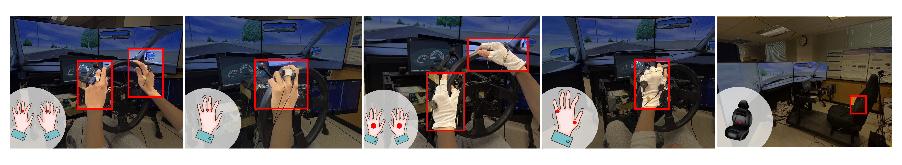

Comparing Smart Ring and Glove Wearable Interfaces for Takeover Requests in Automated Driving
A driving simulator experiment comparing ring, glove, and seat-back vibrotactile takeover-request interfaces, and the information types and request structures delivered through them.

Overview
This project investigated how wearable vibrotactile takeover-request interfaces could support driver takeover performance in SAE Level 3 automated driving. We compared ring-, glove-, and seat-back vibration interfaces while also examining different information types and takeover-request structures in a driving simulator study.
Problem Statement
Level 3 automated driving requires drivers to quickly transition from non-driving activities back to manual control when a takeover request occurs. However, existing tactile warning interfaces can be sensitive to posture and device placement.
This study explored whether wearable vibrotactile devices, including rings and gloves, could provide a more effective way to support driver takeover.
Research Focus
The goal of the present study was to investigate the effects of device type, TOR structure, and information type on drivers' takeover performance in time-critical automated driving situations.
Method
The experiment used a 5 × 2 × 2 full factorial design to examine how wearable device type, takeover-request structure, and information type influenced takeover performance.
Forty licensed drivers (24 female, 16 male) were recruited from the SJSU SONA participant pool. Participants ranged from 18 to 64 years old (M = 24.57) and drove an average of 3.98 days per week.
Participants completed the study in a driving simulator using an SAE Level 3 automated driving scenario. The automated vehicle traveled in the middle lane of a three-lane highway while participants watched YouTube videos as a non-driving-related task. Vibrotactile takeover cues were delivered through five interface configurations: one ring, two rings, one glove, two gloves, and a seat-back vibration baseline.

Participants traveled in the middle lane of a three-lane highway under automated driving while watching YouTube videos as a non-driving-related task. When an obstacle appeared ahead, a takeover request prompted the driver to resume manual control and move into the open adjacent lane.
We evaluated takeover performance and participants' subjective experience using both objective and subjective measures.
Objective Measures
Takeover Time: Time required to respond to the takeover request. Shorter times indicate faster responses.
Information Processing Time: Time required to process the takeover information and select an action. Shorter times indicate faster information processing.
Maximum Resulting Acceleration: Maximum acceleration during the takeover maneuver. Lower values indicate smoother vehicle control.
Subjective Measures
Workload: Participants’ perceived workload during each condition. Higher scores indicate greater workload.
Acceptance: Participants’ perceived usefulness and satisfaction with the interface. Higher scores indicate greater acceptance.
Results & Discussion
Two-step takeover requests sped up responses but introduced trade-offs, while device configuration and information type shaped how useful the interface felt more than objective performance.
- Two-step TOR led to shorter takeover time and information-processing time.
- But it also led to higher maximum resulting acceleration.
- Two-step TOR received lower usefulness ratings.
- Its workload effect depended on information type.
- Two-step TORs led to faster responses after the tactile cue.
- The pre-warning may have helped drivers reorient earlier.
- However, faster responses did not improve overall takeover quality.
- Two-step TORs also showed a subjective trade-off, with lower usefulness and higher workload in the instructional condition.
- Device configuration did not affect objective performance.
- Usefulness: two-glove > two-ring.
- Satisfaction: two-glove > one-glove.
- All devices provided clear directional information after training.
- Two-glove and two-ring showed higher usefulness ratings, which may reflect better spatial mapping of the tactile cues.
- Glove devices may also have been more comfortable because the tactors fit better on the back of the hand.
- Information type did not affect objective performance.
- Informative cues received higher usefulness ratings than instructional cues.
- Both cue types supported similar objective performance after training.
- Informative cues received higher usefulness ratings, perhaps because they provided more context about the driving environment.
- In the instructional condition, the pre-warning may have felt redundant and increased workload.
Limitations
References
Brandenburg, S., & Roche, F. (2020). Behavioral changes to repeated takeovers in automated driving: The drivers’ ability to transfer knowledge and the effects of takeover request process. Transportation Research Part F: Traffic Psychology and Behaviour, 73, 15–28. https://doi.org/10.1016/j.trf.2020.06.002
On-Road Automated Driving (ORAD) Committee. (2021). Taxonomy and Definitions for Terms Related to Driving Automation Systems for On-Road Motor Vehicles. SAE International. https://doi.org/10.4271/J3016_202104
Huang, G., & Pitts, B. J. (2022a). Takeover requests for automated driving: The effects of signal direction, lead time, and modality on takeover performance. Accident Analysis & Prevention, 165, 106534. https://doi.org/10.1016/j.aap.2021.106534
Petermeijer, S., Doubek, F., & De Winter, J. (2017). Driver response times to auditory, visual, and tactile take-over requests: A simulator study with 101 participants. 2017 IEEE International Conference on Systems, Man, and Cybernetics (SMC), 1505–1510. https://doi.org/10.1109/SMC.2017.8122827
Green, M. (2000). “How Long Does It Take to Stop?” Methodological Analysis of Driver Perception-Brake Times. Transportation Human Factors, 2(3), 195–216. https://doi.org/10.1207/STHF0203_1
Lindemann, P., Müller, N., & Rigolll, G. (2019). Exploring the Use of Augmented Reality Interfaces for Driver Assistance in Short-Notice Takeovers. 2019 IEEE Intelligent Vehicles Symposium (IV), 804–809. https://doi.org/10.1109/IVS.2019.8814237
Walch, M., Lange, K., Baumann, M., & Weber, M. (2015). Autonomous driving: Investigating the feasibility of car-driver handover assistance. Proceedings of the 7th International Conference on Automotive User Interfaces and Interactive Vehicular Applications, 11–18. https://doi.org/10.1145/2799250.2799268
Politis, I., Brewster, S., & Pollick, F. (2017). Using Multimodal Displays to Signify Critical Handovers of Control to Distracted Autonomous Car Drivers. International Journal of Mobile Human Computer Interaction, 9(3), 1–16. https://doi.org/10.4018/ijmhci.2017070101
Lo, W.-H., & Huang, G. (2025). Directional vibrotactile takeover requests on a wrist-worn device: Effects of age, pattern type, and urgency in automated driving. Accident Analysis & Prevention, 220, 108093. https://doi.org/10.1016/j.aap.2025.108093
Meng, F., & Spence, C. (2015). Tactile warning signals for in-vehicle systems. Accident Analysis & Prevention, 75, 333–346. https://doi.org/10.1016/j.aap.2014.12.013
Pescara, E., Stubenbord, A., Röddiger, T., Fang, L., & Beigl, M. (2021). Where Should I Look? Comparing Reference Frames for Spatial Tactile Cues. 2021 International Symposium on Wearable Computers, 68–72. https://doi.org/10.1145/3460421.3478822
Jumet, B., Zook, Z. A., Yousaf, A., Rajappan, A., Xu, D., Yap, T. F., Fino, N., Liu, Z., O’Malley, M. K., & Preston, D. J. (2023). Fluidically programmed wearable haptic textiles. Device, 1(3). https://doi.org/10.1016/j.device.2023.100059
Martinez, K. D., & Huang, G. (2022). In-Vehicle Human Machine Interface: Investigating the Effects of Tactile Displays on Information Presentation in Automated Vehicles. IEEE Access, 10, 94668–94676. https://doi.org/10.1109/ACCESS.2022.3205022
Zhang, W., Zeng, Y., Yang, Z., Kang, C., Wu, C., Shi, J., Ma, S., & Li, H. (2021). Optimal Time Intervals in Two-Stage Takeover Warning Systems With Insight Into the Drivers’ Neuroticism Personality. Frontiers in Psychology, 12, 601536. https://doi.org/10.3389/fpsyg.2021.601536
Ma, S., Zhang, W., Yang, Z., Kang, C., Wu, C., Chai, C., Shi, J., Zeng, Y., & Li, H. (2021). Take over Gradually in Conditional Automated Driving: The Effect of Two-stage Warning Systems on Situation Awareness, Driving Stress, Takeover Performance, and Acceptance. International Journal of Human–Computer Interaction, 37(4), 352–362. https://doi.org/10.1080/10447318.2020.1860514
Eriksson, A., & Stanton, N. A. (2017). Takeover Time in Highly Automated Vehicles: Noncritical Transitions to and From Manual Control. Human Factors: The Journal of the Human Factors and Ergonomics Society, 59(4), 689–705. https://doi.org/10.1177/0018720816685832
Cohen-Lazry, G., Katzman, N., Borowsky, A., & Oron-Gilad, T. (2019). Directional tactile alerts for take-over requests in highly-automated driving. Transportation Research Part F: Traffic Psychology and Behaviour, 65, 217–226. https://doi.org/10.1016/j.trf.2019.07.025
Proctor, R. W., & Vu, K.-P. L. (2006). Stimulus-Response Compatibility Principles: Data, Theory, and Application (0 ed.). CRC Press. https://doi.org/10.1201/9780203022795